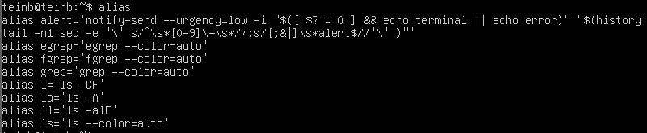
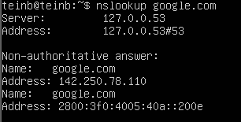
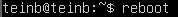

arch:mostrar la arquitectura de su máquina . No requiere argumentos ni
opciones, lo que lo convierte en un comando fácil de usar para principiantes

uname -m
uname -m :: Muestra el tipo de máquina o arquitectura del sistema, que
puede ser útil para identificar la plataforma de hardware en la que se está
ejecutando Linux

uname -r
uname -r :Muestra las interrupciones utilizadas por el sistema, lo que proporciona
información sobre los dispositivos de hardware que están generando
interrupciones en el sistema.
.png)
demicode -q
uname -r :Muestra las interrupciones utilizadas por el sistema, lo que proporciona
información sobre los dispositivos de hardware que están generando
interrupciones en el sistema.

hdparm -i /dev/hda
hdparm -i /dev/hda :Muestra información sobre un dispositivo de almacenamiento.

hdparm -tT /dev/sda
hdparm -tT /dev/sda: Realiza pruebas de velocidad de lectura en un dispositivo de almacenamiento.
.png)
cat /proc/cpuinfo
cat /proc/cpuinfo: Muestra información sobre el procesador.

whereis halt
whereis halt: Muestra la ubicación del comando "halt".

ls -lSr |more
ls -lSr |more: Lista archivos y directorios ordenados por
tamaño y permite desplazarse con "more".
ps
ps: Muestra información sobre los procesos en ejecución.

kill -9 ID_Processo
kill -9 ID_Processo: Envía una señal de finalización al proceso especificado.
tail
tail: Muestra las últimas líneas de un archivo.
top
top: Muestra información sobre los procesos y el uso de recursos en tiempo real.
host
host: Realiza consultas de resolución de nombres DNS.

tar -tf archive.tar
tar -tf archive.tar: Lista el contenido de un archivo tar.

tar -xvfj archive.tar.bz2
tar -xvfj archive.tar.bz2: Extrae un archivo tar comprimido en formato bzip2

init 0
init 0: Apaga el sistema.

shutdown -c
shutdown -c: Cancela un apagado programado.
Exit
Exit: Sale de una sesión de terminal o un programa.

cat /proc/interrupts
cat /proc/interrupts: Muestra las interrupciones del sistema.
.png)
cat /proc/meminfo
cat /proc/meminfo: Muestra información sobre el uso de la memoria.

cat /proc/swaps
cat /proc/swaps: Muestra información sobre el espacio de intercambio.

cat /proc/versión
cat /proc/versión: Muestra información sobre la versión del kernel.

cat /proc/net/dev
cat /proc/net/dev: Muestra estadísticas de red.

cat /proc/mounts
cat /proc/mounts: Muestra los sistemas de archivos montados.
.png)
lspci -tv
lspci -tv: Muestra información sobre los dispositivos PCI.
which
which: Muestra la ubicación de un ejecutable en el sistema.

du -sh dir1
du -sh dir1: Muestra el tamaño de un directorio.
.png)
ps -eafw
ps -eafw: Muestra información detallada sobre los procesos en ejecución.

kill -1 ID_Processo
kill -1 ID_Processo: Reinicia un proceso.
who
who: Muestra los usuarios conectados.
.png)
whois
whois: Realiza consultas WHOIS en bases de datos de dominios.
tar
tar: Utilidad para manipular archivos tar.

tar -xvf archive.tar
tar -xvf archive.tar: Extrae el contenido de un archivo tar llamado archive.tar.

tar -cvfz archive.tar.gz dir1
tar -cvfz archive.tar.gz dir1: Crea un archivo tar comprimido en
formato gzip llamado archive.tar.gz que contiene el contenido del directorio dir1.

telinit 0
telinit 0: Cambia el nivel de ejecución del sistema a 0, lo que generalmente
apaga el sistema. Es similar a los comandos de apagado como halt, shutdown -h now, o init 0./p>

shutdown -r now
shutdown -r now: Reinicia el sistema inmediatamente.
vi
vi: Es un editor de texto en modo terminal muy potente y versátil.

lsusb -tv
lsusb -tv: Lista información detallada sobre los dispositivos USB conectados al sistema.
date
date: Muestra la fecha y la hora actuales del sistema.
.png)
cal 2024
cal 2024: Muestra el calendario del año 2024.

cal 07 2024
cal 07 2024: Muestra el calendario del mes de julio de 2024.

date 041217002011.00
date 041217002011.00: Cambia la fecha y la hora del sistema al 12 de abril de 2017, 17:00:11.
find
find: Se utiliza para buscar archivos y directorios en un sistema de archivos.

find / -name file1
find / -name file1: Busca el archivo llamado "file1" en todo el sistema de archivos.

which halt
which halt: Muestra la ubicación del comando "halt" en el sistema.

du -sk * | sort -rn
du -sk * | sort -rn: Muestra el tamaño de todos los directorios
y archivos en el directorio actual, ordenados por tamaño en orden descendente.

ps -e -o pid,args – forest
. ps -e -o pid,args – forest: Muestra una lista de todos los procesos en
ejecución en forma de árbol.

lsof -p $$
lsof -p $$: Muestra los archivos abiertos por el proceso actual.

alias
alias: Muestra o define alias de comandos en el sistema.

nslookup
nslookup: Se utiliza para realizar consultas de búsqueda de DNS
para obtener información sobre los registros de DNS.

tar -cvf archive.tar file1
tar -cvf archive.tar file1: Crea un archivo tar llamado archive.
tar que contiene el archivo file1.

tar -xvf archive.tar -C
tar -xvf archive.tar -C: Extrae el contenido del archivo tar archive.
tar en el directorio especificado después de -C.

tar -xvfz archive.tar.gz
tar -xvfz archive.tar.gz: Extrae los archivos de un archivo tar
comprimido en formato gzip llamado archive.tar.gz.
halt
halt: Apaga el sistema de inmediato. Este comando debe ser
ejecutado con privilegios de superusuario (root) para que funcione correctamente

reboot
reboot: Reinicia el sistema. También debe ser ejecutado
con privilegios de superusuario.
nano
nano: Es un editor de texto simple y fácil de usar en modo terminal.
Se utiliza para editar archivos de texto en la terminal..
.png)
find / -user user1
find / -user user1: Busca todos los archivos y directorios en todo el
sistema que pertenecen al usuario "user1".

find /home/user1 -name \*.bin
find /home/user1 -name \*.bin: Busca archivos con la extensión ".bin" en el directorio "/home/user1".
.png)
find /usr/bin -type f -atime +100
find /usr/bin -type f -atime +100: Busca archivos en el directorio "/usr/bin"
que hayan sido accedidos hace más de 100 días.

find /usr/bin -type f -mtime -10
find /usr/bin -type f -mtime -10: Busca archivos en el directorio "/usr/bin"
que hayan sido modificados en los últimos 10 días.
.png)
find / -name \*.apt -exec chmod 755 ‘{}’ \;
find / -name \*.apt -exec chmod 755 ‘{}’ \; : Busca archivos con la extensión ".apt" en
todo el sistema y les cambia los permisos a 755
(lectura, escritura y ejecución para el propietario, lectura y ejecución para el grupo y otros).
locate
locate: Busca archivos por nombre.
Whereis
Whereis : Muestra la ubicación de un archivo binario.

df -h
df -h: Muestra el uso de espacio en disco.
top
top :se utiliza para mostrar información en tiempo real sobre
los procesos en ejecución en el sistema
pstree
pstree: Muestra una representación jerárquica de los procesos.

lsof /home/user1
lsof /home/user1: Muestra los archivos abiertos por un proceso.
wget
wget: Descarga archivos desde la web.

hostname
hostname: Muestra el nombre del host.

tar -cvf archive.tar file1 file2 dir1
tar -cvf archive.tar file1 file2 dir1 : se utiliza para crear un archivo tar llamado archive.
tar que contiene los archivos file1 y file2, así como el contenido del directorio dir1

tar -cvfj archive.tar.bz2 dir1
tar -cvfj archive.tar.bz2 dir1 se utiliza para crear un archivo tar comprimido
en formato bzip2 llamado archive.tar.bz2 que contiene el contenido del directorio dir1

shutdown -h now
shutdown -h now: Apaga el sistema de inmediato.

shutdown -h hours:minutes &
shutdown -h hours:minutes & : Programa un apagado para una hora específica.
Logout
Logout : Cierra la sesión actual.
cat
cat: Muestra el contenido de archivos.

apt update
apt update : Actualiza la lista de paquetes disponibles en los repositorios configurados en tu sistema.
No actualiza los paquetes en sí, solo la información sobre ellos.

apt upgrade
apt upgrade : Descarga e instala las actualizaciones disponibles para todos los paquetes instalados en el sistema.

sudo su
apt upgrade : Descarga e instala las actualizaciones disponibles para todos los paquetes instalados en el sistema.

apt list
apt list: Muestra una lista de paquetes disponibles en los repositorios configurados en tu sistema.
df -h
apt list: Muestra una lista de paquetes disponibles en los repositorios configurados en tu sistema.
Figlet
Es una herramienta que se utiliza para generar arte ASCII a partir de texto.
Crea grandes letras compuestas por caracteres más pequeños, que pueden ser
útiles para la creación de banners y títulos en la terminal.

apt search figlet
apt search figlet : Busca en los repositorios de paquetes disponibles en el sistema
cualquier paquete que contenga "figlet" en su nombre o descripción.

apt install figlet
apt install figlet: Instala el paquete "figlet" y todas sus dependencias si está
disponible en los repositorios configurados en el sistema.

man figlet
man figlet : Muestra el manual (documentación) del comando "figlet",
proporcionando información detallada sobre su uso y opciones disponibles
sudo su
Este comando se utiliza para cambiar al usuario root en un sistema Linux.
"sudo" permite ejecutar un comando con privilegios de superusuario y "su" se utiliza para cambiar de usuario.
adduser o useradd
adduser o useradd: Estos comandos se utilizan para añadir un nuevo usuario al sistema.
Puedes usar adduser en sistemas basados en Debian, mientras que useradd es más común en sistemas basados en Red Hat.
Ls
Es un comando utilizado para listar archivos y directorios en un sistema de archivos.
groupadd
groupadd: Este comando se utiliza para añadir un nuevo grupo al sistema.
Puedes crear un nuevo grupo especificando su nombre con este comando